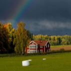
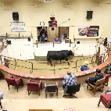

Auctions can be very confusing and difficult for a lot of people. There is a lot going on,the auctioneer is talking away making no sense, hands are flying up all the time, cattle is moving quickly, and nothing is making sense. That is where my website comes in. This page is going to help you out and make life easier. Here everything you need to know about a auction will be explained. There will be info about how to bid properly, cattle information, and anything else that is super important about the auction. The first thing that will pop up on my homepage is where I will explain my purpose and who the website is for. the purpose of my website is simple yet important. My purpose is to provide people who have a hard time at auctions the support and resources they need to have a good time at a cattle auction. This page will have tons of infomation that is needed in order to be succesful at an auction. All information regarding the farmer will be easily found, all information about the cattle that is important will be shown and can be easily found, and lastly all information regarding the auction times and rules will be provided and it will be easily found. After that my audience statement will be below my purpose. Here I will explain that my website is meant for those new to auctions. Here they can view the rules about auctions allowing them to know how to properly bid and receive the cattle the buy. This website is also for those hard of hearing, and older people. Here they can read the information about the cattle and farmers. Now they know which cattle they want to buy and all the have to do is find the number and cattle and bid.

